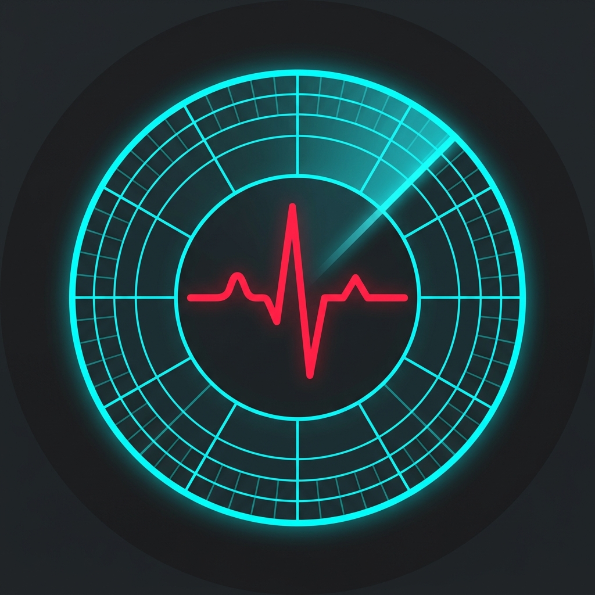

ResQRadarÚltima actualización: 4 de Julio de 2026
Al descargar, instalar o utilizar la aplicación ResQRadar, usted acepta estar sujeto a estos Términos de Servicio. Si no está de acuerdo con alguna parte de estos términos, no debe utilizar la aplicación.
ResQRadar es una herramienta tecnológica en fase de despliegue que utiliza sensores de radiofrecuencia (Wi-Fi CSI/RSSI) y algoritmos de Inteligencia Artificial para estimar la presencia humana y los micro-movimientos (incluyendo estimaciones de frecuencia cardíaca y respiratoria).
ATENCIÓN: RESQRADAR NO ES UN DISPOSITIVO MÉDICO CERTIFICADO. Los datos y las representaciones visuales proporcionadas por la aplicación son estimaciones matemáticas basadas en perturbaciones de señales de radio.
En la medida máxima permitida por la ley aplicable, Moovitya C.A. no será responsable por ningún daño directo, indirecto, incidental, especial, consecuente o punitivo resultante de:
Usted acepta utilizar ResQRadar únicamente para fines lícitos y avanzados. Está estrictamente prohibido utilizar la capacidad de detección a través de muros de la aplicación para violar la privacidad de terceros, acosar, espiar o realizar cualquier actividad ilegal en su jurisdicción.
La base de código original de detección Wi-Fi que dio origen a este proyecto fue desarrollada por Carlos Mundaray (Solvitco) y se encuentra licenciada bajo la Licencia MIT (Software Libre), la cual permite su uso, copia, modificación y distribución. Puedes consultar la licencia original en este enlace.
Basado en los términos de dicha licencia de software libre, Moovitya C.A. ha creado esta versión mejorada e iterativa denominada ResQRadar. Todo el código nuevo, el diseño gráfico (incluyendo la interfaz del radar avanzado), el modo Enjambre P2P, el Portal Cautivo, y las optimizaciones de algoritmos de IA contenidos en esta versión específica, constituyen obras derivadas y son propiedad intelectual de Moovitya C.A.
Para consultas sobre estos términos, por favor contacte a través del sitio web oficial moovitya.com o al número +584242304352.